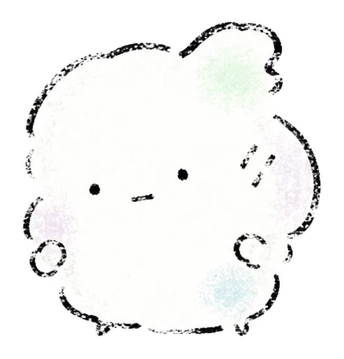

Machiawase ⇔ Mainichi
まちあわせ ⇔ まいにち
あいにいくひととき⇅いつものおとなり
16 landscapes for your bond
MOFU診断は、相手との付き合い方を「良い・悪い」ではなく、4つのやさしい軸から見つける16タイプ診断です。
この診断では、「相手」は今回思い浮かべている相手、「ほかの人」「誰か」は友人・知人・界隈の人など、その相手以外の人を指します。
β版：28問 / 約4〜6分
回答は収集されません。この診断は端末内で計算され、回答内容はサーバーへ送信・保存されません。
まちあわせ ⇔ まいにち
あいにいくひととき⇅いつものおとなり
おどろき ⇔ おかえり
はじめてのわくわく⇅おかえりのあたたかさ
ふなで ⇔ ふなつき
海のふかくへ⇅暮らしの岸辺へ
うたたね ⇔ うたげ
ちいさなひだまり⇅にぎやかなひろば
Question 01
迷ったら「まんなか」で大丈夫です。今の感覚に近いほうを選んでください。
One more choice
バーは真ん中のままです。結果カードを1枚選ぶためだけに、どちらがほんの少し近いか選んでね。
Your MOFU landscape

●は回答から出した相対的な位置。16タイプは、その時点でいちばん近い景色です。
4つの軸それぞれについて、今回の回答で少し近かった景色を紹介します。どちらが優れているという意味ではなく、今の傾向を読むためのものです。